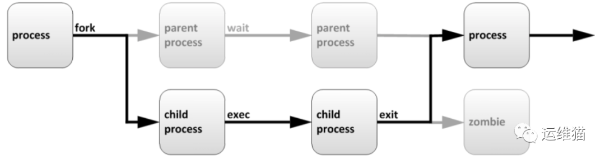
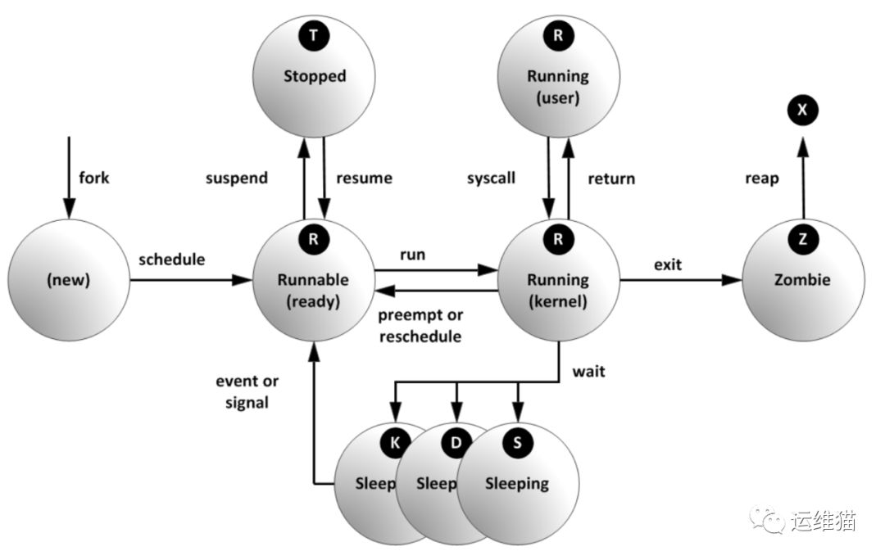
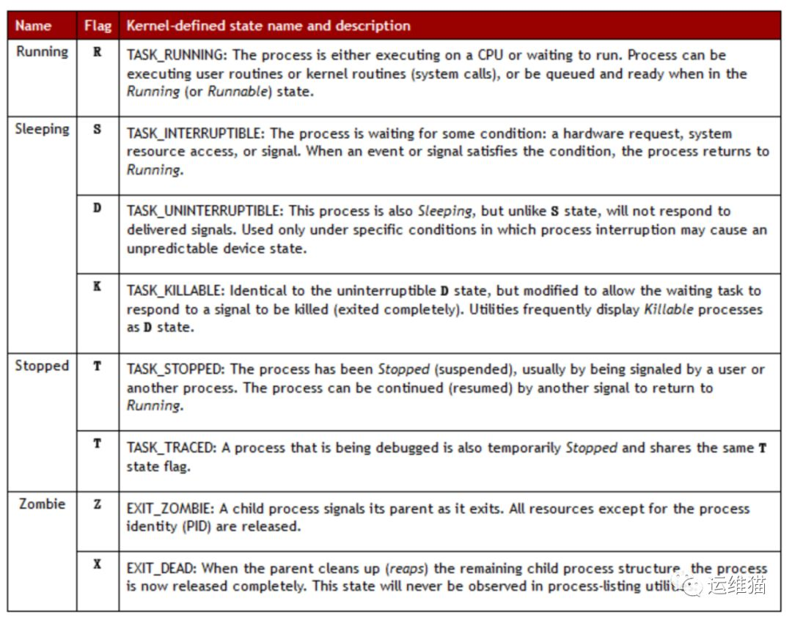
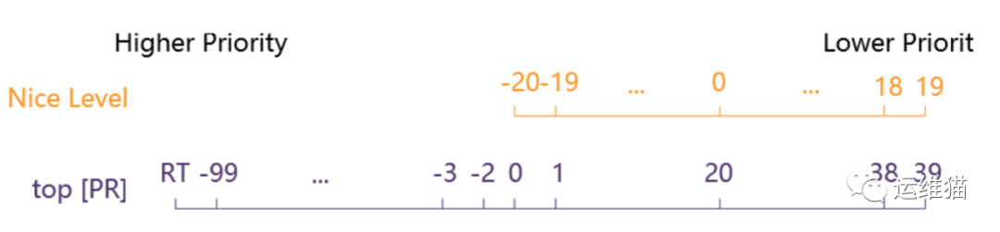

Centos7-系统进程管理
什么是进程
进程是已启动的可执行程序的运行实例，进程有以下组成部分：
已分配内存的地址空间；
安全属性，包括所有权凭据和特权；
程序代码的一个或多个执行线程；
进程状态
程序： 二进制文件，静态 /bin/date, /usr/sbin/httpd，/usr/sbin/sshd, /usr/local/nginx/sbin/nginx 。
进程： 是程序运行的过程， 动态，有生命周期及运行状态。
进程的生命周期

描述如下：
父进程复制自己的地址空间（fork [fɔ:k] 分叉）创建一个新的（子）进程结构。每个新进程分配一个唯一的进程 ID （PID），满足跟踪安全性之需。PID 和 父进程 ID （PPID）是子进程环境的元素，任何进程都可以创建子进程，所有进程都是第一个系统进程的后代。
centos5或6PID为1的进程是：init
centos7 PID为1的进程是：systemd
僵尸进程：一个进程使用fork创建子进程，如果子进程退出，而父进程并没有调用wait或waitpid获取子进程的状态信息，那么子进程的进程描述符仍然保存在系统中。这种进程称之为僵尸进程。
用自己的话表达:父进程退出了，子进程没有退出， 那么这些子进程就没有父进程来管理了，就变成僵尸进程。
进程的属性
进程ID（PID)：是唯一的数值，用来区分进程
父进程的ID（PPID)
启动进程的用户ID（UID）和所归属的组（GID）
进程状态：状态分为运行R、休眠S、僵尸Z
进程执行的优先级
进程所连接的终端名
进程资源占用：比如占用资源大小（内存、CPU占用量）
使用ps查看进程工具
常用的参数：
a: 显示跟当前终端关联的所有进程
u: 基于用户的格式显示（U: 显示某用户ID所有的进程）
x: 显示所有进程，不以终端机来区分
常用的选项组合
1
2
3
4
5
6
7
8
9
10
11
12
13
14
15
16
17
18
19
20
21
22
23
24
25
26
27
28
29
30
31
32
33
34
35
36
37
38
39
40
41
42
43
44
45
46
47
48
49
50
51
52
53
54
55
56
57
58
| [root@docker-01 ~]# ps -aux|more ##是用BSD的格式来显示进程
USER PID %CPU %MEM VSZ RSS TTY STAT START TIME COMMAND
root 1 0.0 0.0 128148 6684 ? Ss 11月01 0:09 /usr/lib/syste
md/systemd --switched-root --system --deserialize 22
root 2 0.0 0.0 0 0 ? S 11月01 0:00 [kthreadd]
root 3 0.0 0.0 0 0 ? S 11月01 0:00 [ksoftirqd/0]
root 5 0.0 0.0 0 0 ? S< 11月01 0:00 [kworker/0:0H]
root 6 0.0 0.0 0 0 ? S 11月01 0:00 [kworker/u8:0]
root 7 0.0 0.0 0 0 ? S 11月01 0:00 [migration/0]
root 8 0.0 0.0 0 0 ? S 11月01 0:00 [rcu_bh]
root 9 0.0 0.0 0 0 ? S 11月01 0:12 [rcu_sched]
root 10 0.0 0.0 0 0 ? S< 11月01 0:00 [lru-add-drain
#
USER: 运行进程的用户
PID： 进程ID
%CPU: CPU占用率
%MEM: 内存占用率
VSZ： 占用虚拟内存
RSS: 占用实际内存 驻留内存
TTY： 进程运行的终端
STAT： 进程状态 man ps (/STATE)
R 运行
S 可中断睡眠 Sleep
D 不可中断睡眠
T 停止的进程
Z 僵尸进程
X 死掉的进程
Ss s进程的领导者，父进程
S< <优先级较高的进程
SN N优先级较低的进程
R+ +表示是前台的进程组
Sl 以线程的方式运行
START: 进程的启动时间
TIME： 进程占用CPU的总时间
COMMAND： 进程文件，进程名
[root@docker-01 ~]# ps -ef|head ##是用标准的格式显示进程
UID PID PPID C STIME TTY TIME CMD
root 1 0 0 11月01 ? 00:00:09 /usr/lib/systemd/systemd --switched-root --system --deserialize 22
root 2 0 0 11月01 ? 00:00:00 [kthreadd]
root 3 2 0 11月01 ? 00:00:00 [ksoftirqd/0]
root 5 2 0 11月01 ? 00:00:00 [kworker/0:0H]
root 6 2 0 11月01 ? 00:00:00 [kworker/u8:0]
root 7 2 0 11月01 ? 00:00:00 [migration/0]
root 8 2 0 11月01 ? 00:00:00 [rcu_bh]
root 9 2 0 11月01 ? 00:00:12 [rcu_sched]
root 10 2 0 11月01 ? 00:00:00 [lru-add-drain]
#
UID: 启动这些进程的用户
PID: 进程的ID
PPID: 父进程的进程号
C: 进程生命周期中的CPU利用率
STIME: 进程启动时的系统时间
TTY: 表明进程在哪个终端设备上运行。如果显示 ?表示与终端无关，这种进程一般是内核态进程。另外， tty1-tty6 是本机上面的登入者程序，若为 pts/0 等，则表示运行在虚拟终端上的进程。
TIME: 运行进程一共累计占用的CPU时间
CMD: 启动的程序名称
|


对进程的指定列进行排序
1
2
3
4
| [root@docker-01 ~]# ps aux --sort %cpu |less ##升序排序
[root@docker-01 ~]# ps aux --sort -%cpu |less ##降序排序
[root@docker-01 ~]# ps aux --sort rss |less
[root@docker-01 ~]# ps aux --sort -rss |less
|
不可中断状态
1
2
3
4
5
6
7
| [root@docker-01 ~]# tar -zcvf usr-tar.gz /usr/
#
[root@docker-01 ~]# ps -axu|grep tar
root 25426 3.8 0.0 123688 1552 pts/0 R+ 10:31 0:01 tar -zcvf usr-tar.gz /usr/
root 25447 0.0 0.0 112724 984 pts/1 S+ 10:31 0:00 grep --color=auto tar
root 25426 3.8 0.0 123688 1552 pts/0 D+ 10:31 0:01 tar -zcvf usr-tar.gz /usr/
root 25447 0.0 0.0 112724 984 pts/1 S+ 10:31 0:00 grep --color=auto tar
|
找出系统中使用CPU最多的进程
运行top， 找出使用CPU最多的进程，按大写的P，可以按CPU使用率来排序显示
1
2
3
4
5
6
7
8
9
10
| [root@docker-01 ~]# top
top - 10:48:16 up 1 day, 18:41, 2 users, load average: 0.00, 0.04, 0.08
Tasks: 111 total, 2 running, 109 sleeping, 0 stopped, 0 zombie
%Cpu(s): 0.1 us, 0.1 sy, 0.0 ni, 99.8 id, 0.0 wa, 0.0 hi, 0.0 si, 0.0
KiB Mem : 16266520 total, 11269388 free, 2162204 used, 2834928 buff/cache
KiB Swap: 2097148 total, 2097148 free, 0 used. 13687952 avail Mem
PID USER PR NI VIRT RES SHR S %CPU %MEM TIME+ COMMAND
17427 kibana 20 0 2515164 1.3g 10324 S 0.7 8.3 9:05.29 node
17255 elastic+ 20 0 4713976 308280 15708 S 0.3 1.9 11:09.30 java
|
在linux系统中一个进程，最多可以使用100%cpu对吗？
1
2
3
4
5
6
7
8
9
10
11
| [root@localhost ~]# top
top - 10:51:24 up 61 days, 23:00, 2 users, load average: 46.56, 48.38, 34.85
Tasks: 267 total, 1 running, 266 sleeping, 0 stopped, 0 zombie
Cpu(s): 96.9%us, 1.6%sy, 0.0%ni, 0.3%id, 0.0%wa, 0.5%hi, 0.5%si, 0.2%st
Mem: 71545156k total, 71079896k used, 465260k free, 58836k buffers
Swap: 2097148k total, 0k used, 2097148k free, 18012268k cached
PID USER PR NI VIRT RES SHR S %CPU %MEM TIME+ COMMAND
13073 smgadmin 20 0 5451m 1.4g 21m S 130.5 2.0 184:57.92 java
30753 smgadmin 20 0 4801m 1.3g 21m S 92.7 2.0 20:14.24 java
#
|
注
如果你的4核心的cpu，你可以运行400%
Isof查看进程打开的文件，打开文件的进程，进程打开的端口(TCP、UDP)
1
2
3
4
5
6
7
| [root@docker-01 ~]# yum install lsof
[root@docker-01 ~]# vim a.txt
[root@docker-01 ~]# ps -axu | grep a.txt
root 25526 0.0 0.0 151532 5200 pts/0 S+ 10:55 0:00 vim a.txt
root 25560 0.0 0.0 112724 1004 pts/1 S+ 10:57 0:00 grep --color=auto a.txt
[root@docker-01 ~]# lsof -p 25526 ##一般用于查看木马进程，在读哪些文件
[root@docker-01 ~]# lsof -i :22 ##用于查看端口，或查看黑客开启的后门端口是哪个进程在使用
|
进程优先级nice
进程调度及多任务
每个CPU（或CPU核心）在一个时间点上只能处理一个进程，通过时间片技术，Linux实际能够运行的进程（和线程数）可以超
出实际可用的CPU及核心数量。Linux内核进程调度程序将多个进程在CPU核心上快速切换，从而给用户多个进程在同时运行的印象。
相对优先级 nice
由于不是每个进程都与其他进程同样重要，可告知进程调度程序为不同的进程使用不同的调度策略。常规系统上运行的大多
数进程所使用的调度策略为 SCHED_OTHER (也称为SCHED_NORMAL)，但还有其它一些调度策略用于不同的目的。
SCHED_OTHER 调度策略运行的进程的相对优先级称为进程的 nice 值，可以有40种不同级别的nice值。

nice 值越高： 表示优先级越低，例如+19，该进程容易将CPU 使用量让给其他进程。
nice 值越低： 表示优先级越高，例如-20，该进程更不倾向于让出CPU。
nice启动级别的设置
1
2
3
4
5
6
7
8
9
10
11
12
13
14
15
16
17
18
| #
[root@docker-01 ~]# sleep 6000 &
[1] 25601
[root@docker-01 ~]# ps axo command,pid,nice |grep sleep
sleep 6000 25601 0
grep --color=auto sleep 25603 0
#
[root@docker-01 ~]# nice -n 5 sleep 6000 &
[2] 25605
[1] 已杀死 sleep 6000
[root@docker-01 ~]# ps axo command,pid,nice |grep sleep
sleep 6000 25605 5
grep --color=auto sleep 25607 0
#
25605 (进程 ID) 旧优先级为 5，新优先级为 -15
[root@docker-01 ~]# ps axo command,pid,nice |grep sleep
sleep 6000 25605 -15
grep --color=auto sleep 25611 0
|

This is copyright.